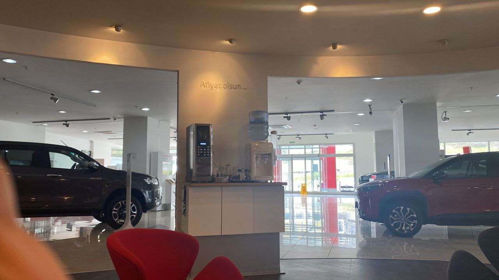
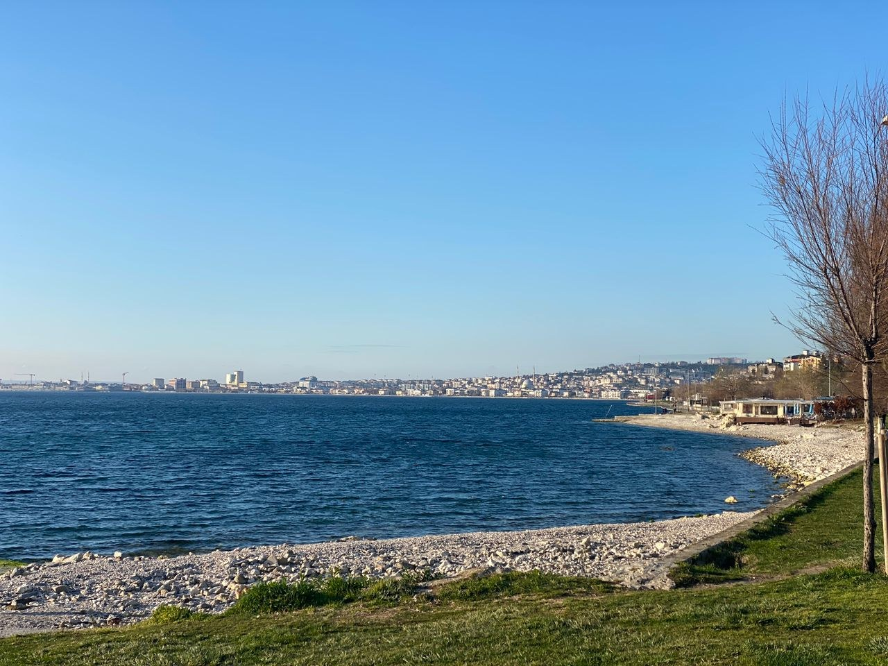
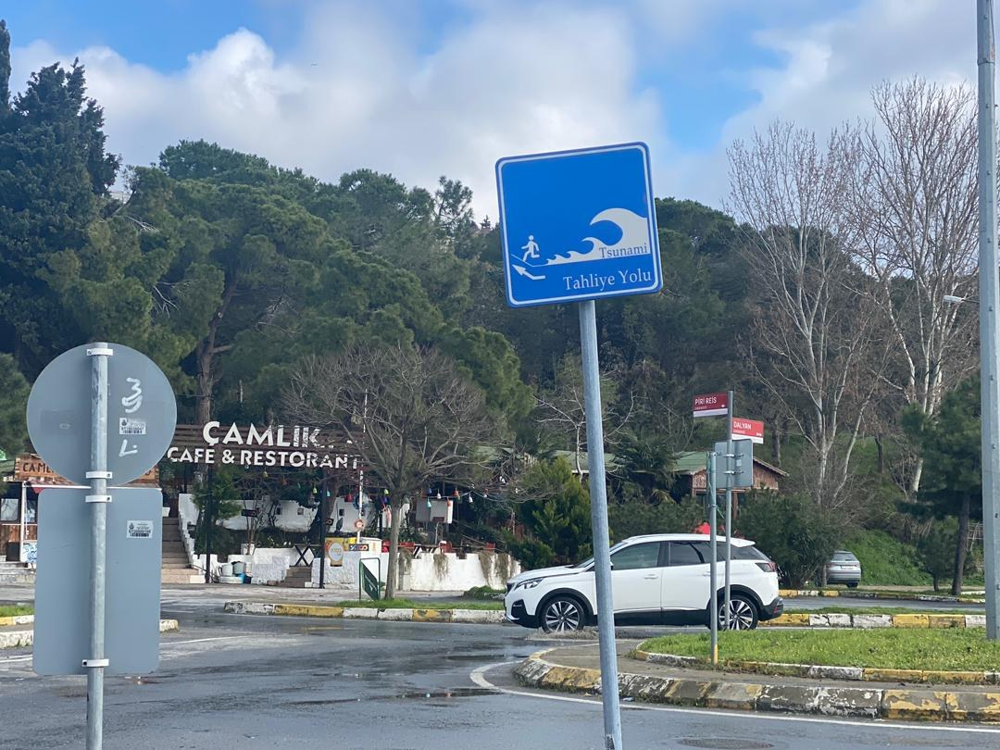

Real Story · 中文
上一段还是春天，下一转弯又变冬天。
21 March 2024，我从 Safranbolu 开往 Sapanca。 这一天的路很奇妙。 前一段像 country road in spring，树和路边的颜色都比较温和。 可是下一段转弯以后，天气和景色突然又像回到 winter。
Turkey 的路就是这样，一边开一边换季。 不是换国家，也不是换城市， 只是一个转弯，路的气氛就完全不同。
Toyota Aykon
A careful check, even without Hiace experience.
On the way to Sapanca, I stopped by Toyota Aykon. They did not have specific service experience with Toyota Hiace, but they still carefully examined Toyotaki.
After checking, they thought it was okay for me to continue. For overland travel, this kind of practical reassurance is important. Sometimes you do not need a big repair; you just need someone careful enough to check and say, “it should be okay.”

Marmara Istanbul
A beach parking place full of caravans — until I saw the sign.
From 22 March to 24 March, I overnighted at Marmara Istanbul, near a beautiful beach where the parking area was full of caravans. Because there were many other campervans around, I felt safe there.
Then I saw the sign: “Tsunami Tahliye Yolu.” Tsunami evacuation route. Suddenly the safe feeling became a little funny. Beautiful beach, many caravans, safe parking — and also a tsunami escape sign. Road life always has this kind of “lol” moment.


English Memory Summary
A route that changed seasons, then ended at a beach with a warning sign.
On 21 March 2024, Tuzi drove from Safranbolu toward Sapanca. The road changed atmosphere quickly: one part felt like spring countryside, while the next turn returned to a winter-like landscape.
She stopped at Toyota Aykon for a check. Although they did not have specific Toyota Hiace service experience, they carefully examined Toyotaki and thought it was okay to continue.
From 22 to 24 March, Tuzi stayed near Marmara Istanbul at a beach parking area full of caravans. The presence of other campervans made the place feel safe — until she noticed the “Tsunami Tahliye Yolu” sign, turning the safety feeling into a small road-life joke.
Heart Statement
有些路，一天之内会给你春天、冬天、安心，和一个海啸逃生牌。
The road changed seasons. Toyota checked the van. The beach felt safe — until the tsunami sign joined the story.